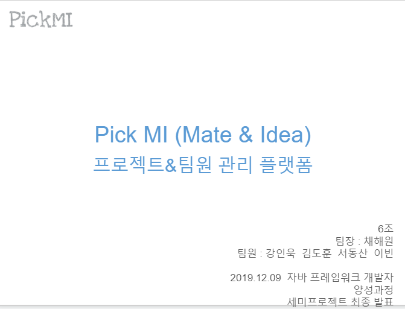
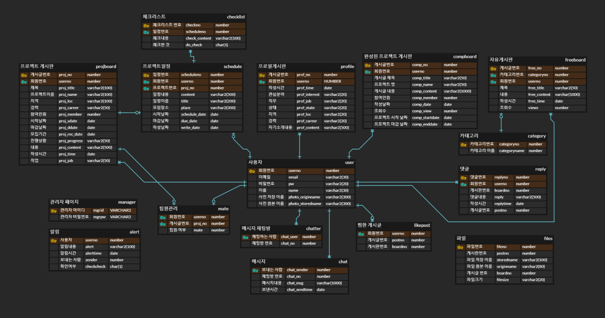
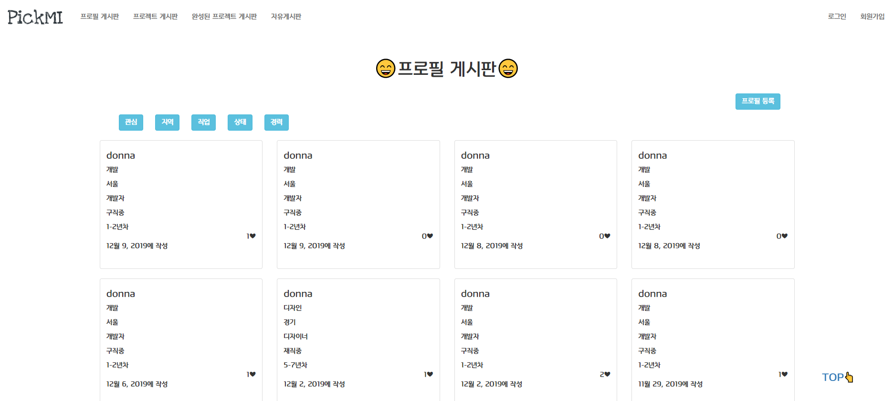
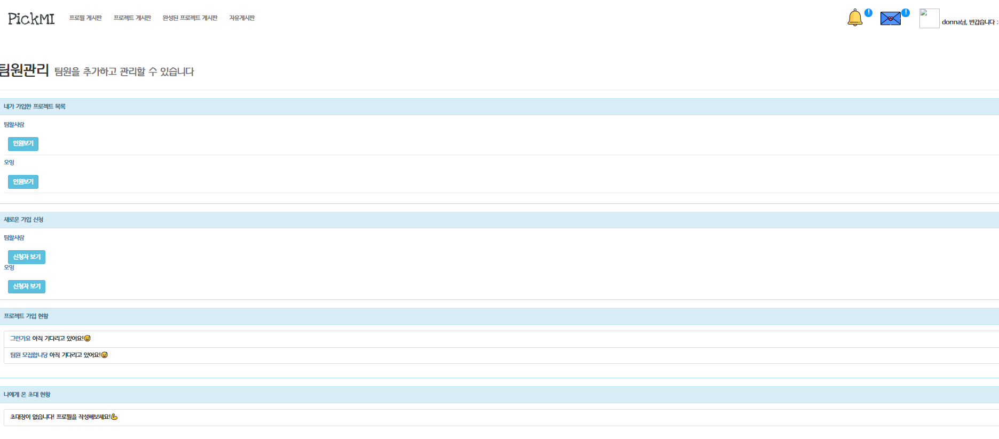

자신의 아이디어를 함께 공유하고, 팀을 이루어 프로젝트를 진행함으로써 다양한 소통과 경험을 증진시킨다.

로그인, 회원가입, 메세지, 메인페이지, 개인정보 수정, 최근 게시글 보기, 댓글 기능, 찜하기 기능, 필터, 게시글 작성, 게시글 수정, 게시글 삭제, 첨부파일 업로드/다운로드, 검색 기능, 달력 기능, 업무 체크리스트, 팀원 관리 기능, 관리자 페이지 등

게시글 목록을 한눈에 보기 편하도록 썸네일을 이용하여 만들었다.
게시글 작성 을 할 수 있도록 했다.
게시글 수정시에 로그인 한 회원 정보와 일치해야 수정이 가능하도록 만들었다.
게시글 삭제 또한 로그인 정보랑 일치해야 삭제 가능하도록 만들었다.
게시글을 필터별로 선택 해서 볼 수 있도록 만들었다.
좋아요 버튼을 누르면 ajax를 확용하여, 페이지 이동 없이 숫자가 증가하도록 만들었다.

내가 가입한 프로젝트 목록을 볼 수 있다.
내가 리더로써 프로젝트를 가지고 있다면, 새로 들어온 가입 신청 목록을 볼 수 있도록 만들었다.
참여하고 싶은 프로젝트에 신청을 하였다면, 프로젝트 가입 신청 현황을 볼 수 있다.
누군가 나에게 프로젝트 초대를 보냈다면, 내가 받은 초대 현황을 볼 수 있다.
내가 가입한 프로젝트의 팀원들 목록을 볼 수 있다.
프로젝트의 팀원 목록에서 팀원들의 정보를 살펴볼 수 있다.
리더로써 프로젝트를 진행하고 있다면, 팀원을 추방 시킬 수 있고, 팀원으로써 가입을 하고 있다면 탈퇴를 할 수 있다.
내가 받은 프로젝트의 초대를 수락하거나 거절할 수 있다.